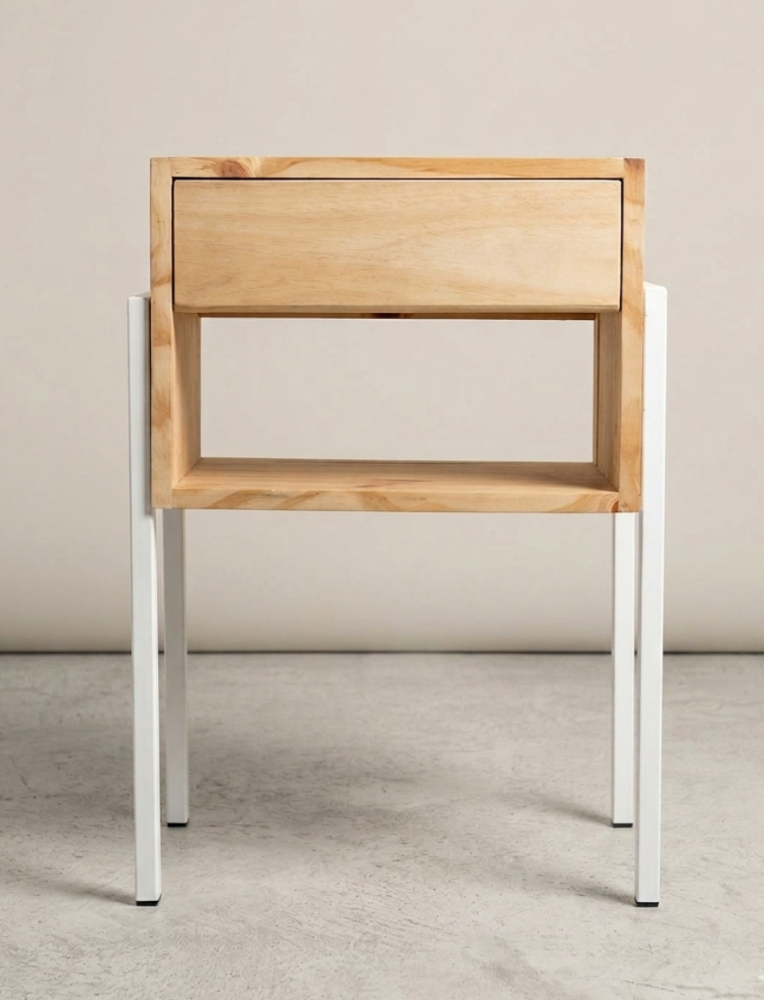
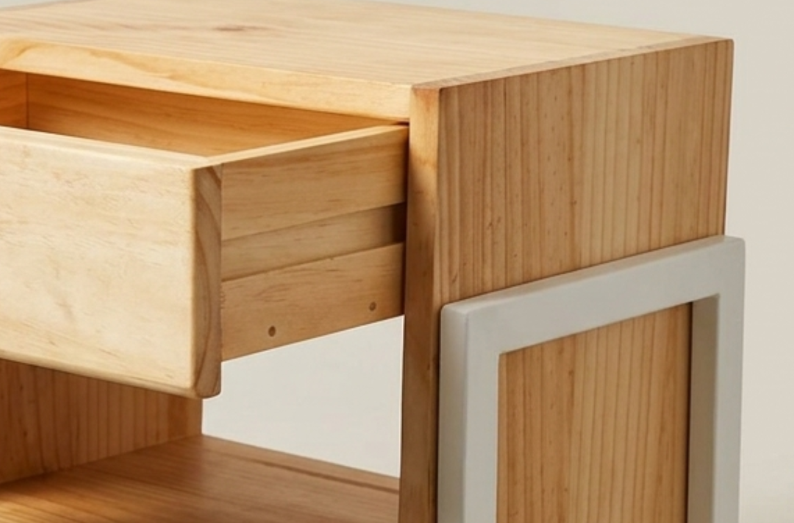
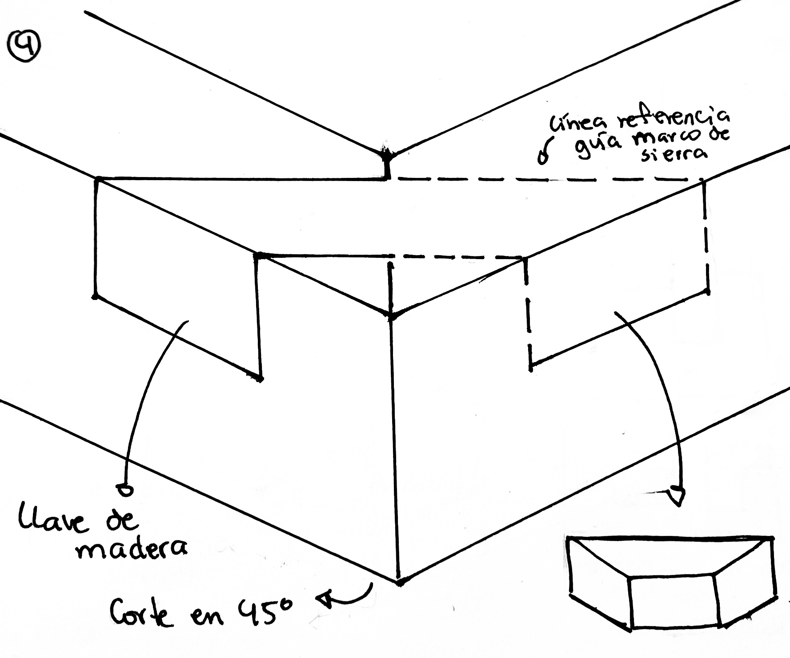
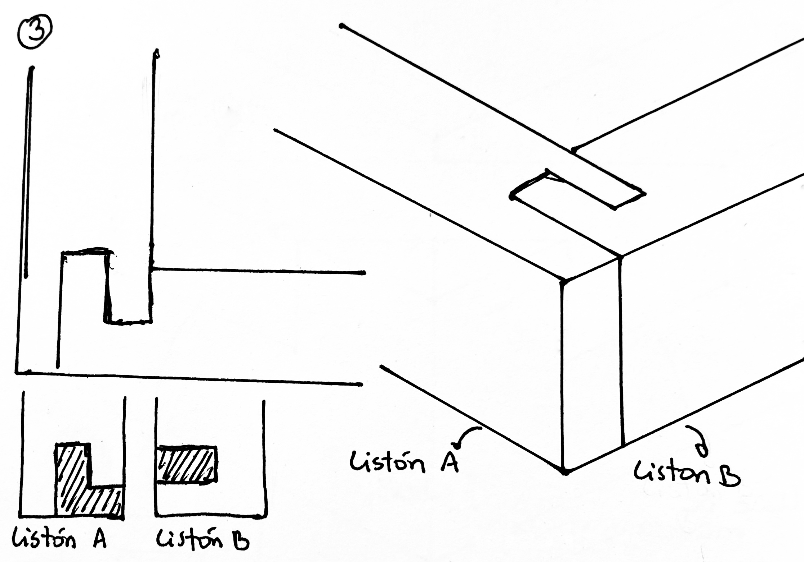
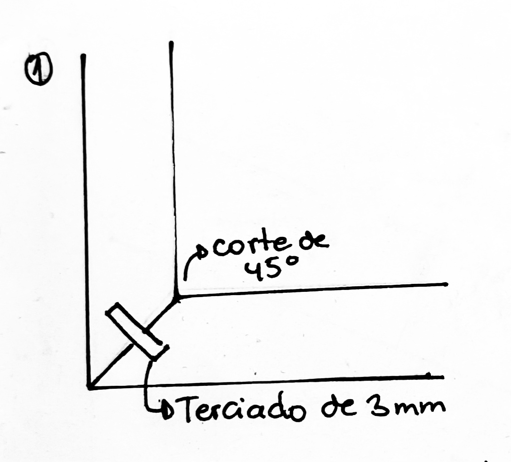
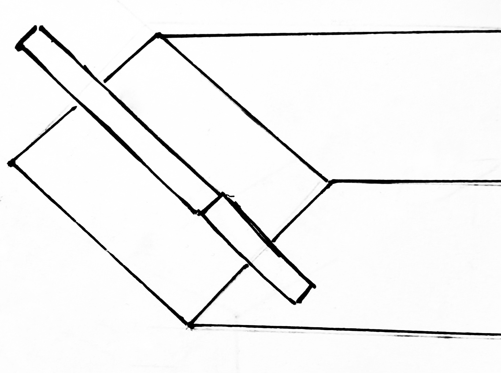
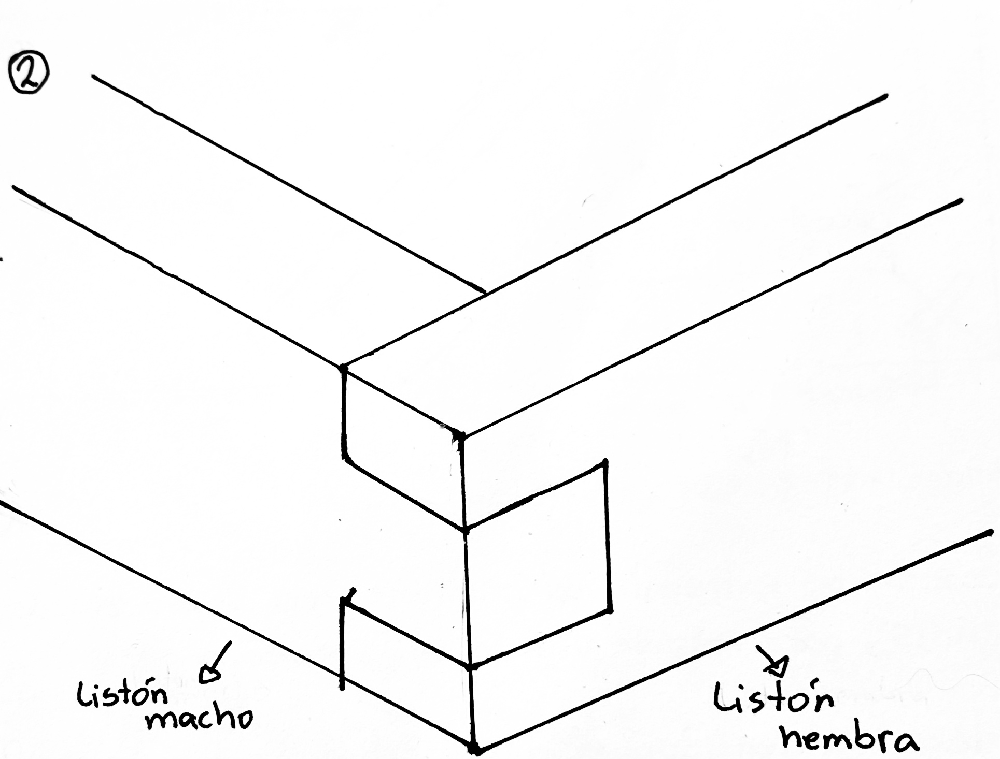
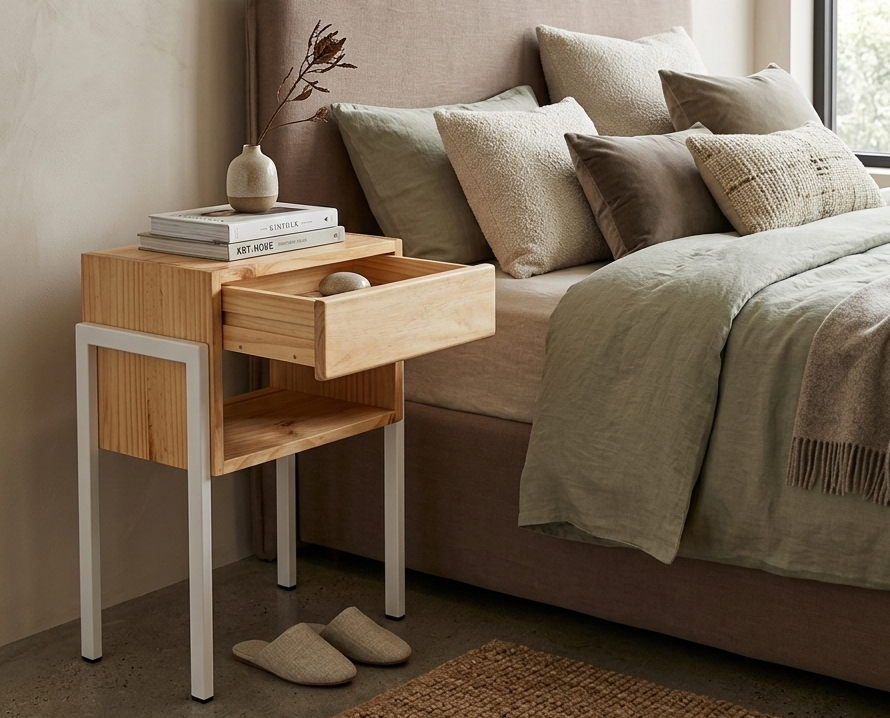

Diseño de producto · 2023
Mesa de
Mesa de
noche

Mesa de noche hecha en madera de pino con una base metálica. El foco fue probar distintas formas de unir la madera sin usar tornillos visibles, buscando un resultado limpio y bien cuidado.


El cajón está hecho en terciado y sus uniones se resolvieron a partir de pruebas previas. La base de fierro fue diseñada y fabricada para aportar estabilidad y generar un contraste con la madera.
proceso








KORA — 2023